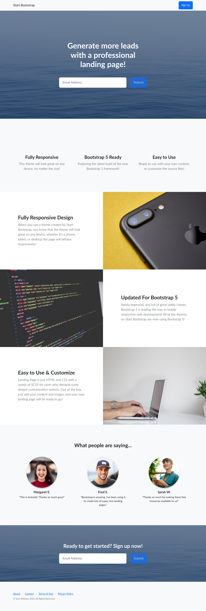
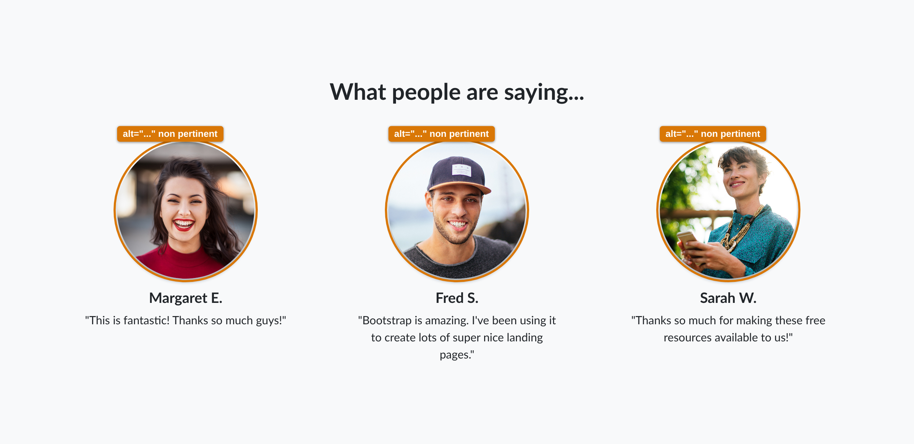
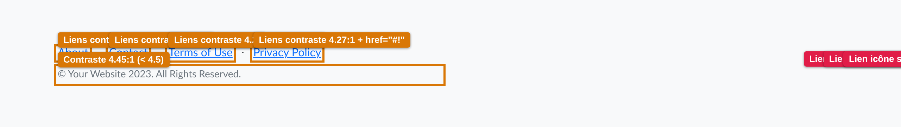
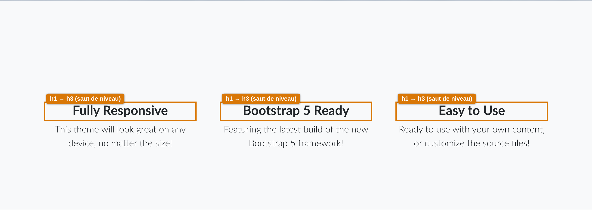

Thème « Start Bootstrap – Landing Page » · page dist/index.html
La page repose sur Bootstrap 5, qui fournit une base correcte (HTML sémantique de sections, focus visibles par défaut, zoom autorisé, structure responsive). L'audit relève néanmoins 14 problèmes dont plusieurs bloquent réellement les utilisateurs de lecteurs d'écran et de clavier. Les points les plus critiques concernent les champs de formulaire sans étiquette et les liens d'icônes sociales sans intitulé accessible.
Critique bloque l'accès à une fonctionnalité ou une information · Majeur dégrade fortement l'expérience d'une population · Mineur à corriger pour la conformité / la qualité.

| # | Problème | Critère WCAG 2.2 | Sévérité |
|---|---|---|---|
| 1 | Champs e-mail sans <label> (placeholder seul) | 1.3.1 · 3.3.2 · 4.1.2 | Critique |
| 2 | Liens d'icônes sociales sans nom accessible | 2.4.4 · 4.1.2 | Critique |
| 3 | Contraste insuffisant (liens et copyright du pied de page) | 1.4.3 | Majeur |
| 4 | Absence de landmark <main> ; contenu hors repères | 1.3.1 | Majeur |
| 5 | Pas de lien d'évitement (« aller au contenu ») | 2.4.1 | Majeur |
| 6 | Hiérarchie des titres rompue (h1→h3, h2→h5) | 1.3.1 | Majeur |
| 7 | Bouton « Submit » faussement désactivé (classe seule) | 4.1.2 · 1.4.3 | Majeur |
| 8 | Texte alternatif non pertinent (alt="...") sur les témoignages | 1.1.1 | Mineur |
| 9 | Icônes décoratives non masquées aux technologies d'assistance | 1.1.1 | Mineur |
| 10 | Identifiants id dupliqués entre les deux formulaires | 4.1.1* | Mineur |
| 11 | Liens factices href="#!" (navbar, pied de page, réseaux) | 2.4.4 | Mineur |
| 12 | Messages d'erreur dépendants d'un script externe + text-white | 3.3.1 | Mineur |
| 13 | Texte sur image (masthead) — contraste tributaire de l'image | 1.4.3 | Mineur |
| 14 | Métadonnées vides (description, author) et titre générique | Bonne pratique | Mineur |
* La règle 4.1.1 (Analyse syntaxique) a été retirée de WCAG 2.2 : les id dupliqués ne constituent plus un échec formel, mais restent un risque réel pour les associations ARIA et le script — d'où un classement « mineur ».
Les deux champs #emailAddress et #emailAddressBelow n'ont aucun <label> associé : ils s'appuient uniquement sur l'attribut placeholder. Aucun <label> n'est présent dans toute la page. Pour un lecteur d'écran, le champ est annoncé « zone de saisie, vide » sans indiquer ce qu'il faut saisir ; de plus, le texte indicatif disparaît dès la première frappe, ce qui pénalise tous les utilisateurs.
<label> (placeholder seul).Les trois portraits utilisent alt="...". Un lecteur d'écran lit littéralement « points de suspension ». Ces images étant illustratives (le nom est déjà en texte juste à côté), elles devraient porter un alt="" (image décorative) — ou un texte descriptif si elles sont jugées porteuses d'information.

alt="..." à remplacer.Les icônes de la grille de fonctionnalités (bi-window, bi-layers, bi-terminal) sont des <i> purement décoratifs. Elles devraient porter aria-hidden="true" pour ne pas générer de bruit dans les technologies d'assistance.
Le titre et le formulaire sont en blanc sur une photo, avec un voile sombre semi-transparent (opacity:0.5). Le rendu observé est lisible, mais le contraste dépend de la photo : tout remplacement d'image par une version plus claire ferait échouer le critère. Recommandation : garantir un voile suffisamment opaque ou un dégradé pour sécuriser ≥ 4.5:1 quelle que soit l'image.
Les trois liens réseaux sociaux du pied de page ne contiennent qu'une icône (<a><i class="bi-facebook"></i></a>), sans texte ni aria-label. Confirmé par axe-core (règle link-name, impact « serious ») : ces liens sont annoncés « lien » sans destination. Un internaute au lecteur d'écran ne peut pas savoir où ils mènent.

Aucun lien « Aller au contenu » n'est proposé en tête de page. Combiné à l'absence de <main> (problème ④), les utilisateurs au clavier doivent traverser la navigation à chaque chargement sans pouvoir l'éviter.
Le bouton porte la classe .disabled mais pas l'attribut disabled ni aria-disabled. Sur un <button>, la classe Bootstrap n'empêche pas l'activation au clavier : l'état perçu (grisé, opacity:.65) ne correspond pas à l'état réel transmis aux technologies d'assistance. L'opacité réduite dégrade en outre le contraste du libellé sous le seuil de 4.5:1.
href="#!"La marque de la navbar, les liens du pied de page (About, Contact, Terms of Use, Privacy Policy) et les réseaux sociaux pointent tous vers #!, une ancre inexistante. Ces liens sont focalisables mais ne mènent nulle part : ils trompent l'utilisateur et brouillent le but du lien. À renseigner avec de vraies destinations (ou retirer).
L'ordre des niveaux saute : après le h1 du masthead, la grille de fonctionnalités utilise des h3 (le niveau h2 est sauté) ; plus bas, les témoignages passent d'un h2 de section à des h5. Confirmé par axe-core (heading-order). La navigation par titres, très utilisée au lecteur d'écran, devient illogique.

h3 directement sous le h1 (niveau h2 manquant).L'identification des erreurs de saisie repose entièrement sur le script externe SB Forms (data-sb-validations). Sans token API actif ou si le script ne charge pas, aucun message n'apparaît. Les blocs .invalid-feedback en text-white ne sont par ailleurs lisibles que sur fond sombre. Prévoir une validation HTML native (required, type="email") comme socle, indépendante du script.
Les id submitButton, submitSuccessMessage et submitErrorMessage existent en double (masthead + appel à l'action). Même si 4.1.1 ne s'applique plus en WCAG 2.2, des id uniques restent indispensables pour fiabiliser les associations label/for, les références ARIA et le ciblage par script.
Ratios calculés à partir des couleurs réellement appliquées (extraites du DOM rendu), selon la formule WCAG 2.x.
| Élément | Texte | Fond | Ratio | Requis | Résultat |
|---|---|---|---|---|---|
| Liens du pied de page | #0d6efd | #f8f9fa | 4.27:1 | 4.5:1 | ✗ Échec |
Copyright (.text-muted) | #6c757d | #f8f9fa | 4.45:1 | 4.5:1 | ✗ Échec |
| Bouton primaire (libellé) | #ffffff | #0d6efd | 4.50:1 | 4.5:1 | ✓ Limite |
| Texte « lead » fonctionnalités | #212529 | #f8f9fa | 14.63:1 | 4.5:1 | ✓ OK |
| Titres de section | #212529 | #f8f9fa | 14.63:1 | 3:1 | ✓ OK |
| Texte des témoignages | #212529 | #f8f9fa | 14.63:1 | 4.5:1 | ✓ OK |
| Texte des champs | #212529 | #ffffff | 15.43:1 | 4.5:1 | ✓ OK |
Le bouton primaire est exactement à la limite (4.50:1) : toute variation de teinte le ferait échouer, et il échoue en l'état « désactivé » (opacité 0.65). À surveiller.
| Élément | Focalisable | Focus visible | Observation |
|---|---|---|---|
| Liens navbar / pied de page | Oui | Oui (anneau Bootstrap) | Mènent vers #! (sans effet) — voir ⑪ |
| Champs e-mail | Oui | Oui | Rôle correct mais sans nom accessible — voir ① |
| Bouton « Submit » | Oui | Oui | Reste activable malgré l'apparence désactivée — voir ⑦ |
| Liens réseaux sociaux | Oui | Oui | Annoncés sans intitulé — voir ② |
| Saut au contenu | — | — | Absent — voir ⑤ |
WCAG 2.2 — 2.4.11 « Focus non masqué (minimum) » : conforme, la barre de navigation est static-top (non fixe), elle ne recouvre donc jamais l'élément ayant le focus.
| Élément | Annoncé comme | Problème |
|---|---|---|
| Champ e-mail | « Zone de saisie, vide » | Aucun intitulé (placeholder ignoré) — ① |
| Lien Facebook/Twitter/Instagram | « Lien » | Pas de nom accessible — ② |
| Portraits témoignages | « Image, points de suspension » | alt="..." — ⑧ |
| Structure de page | Aucun repère « contenu principal » | Pas de <main> — ④ |
| Navigation par titres | h1 → h3 → … → h5 | Niveaux sautés — ⑥ |
| Critère (AA, nouveau en 2.2) | État |
|---|---|
| 2.4.11 Focus non masqué (minimum) | Conforme (navbar non fixe) |
| 2.5.7 Mouvements de glissement | Non applicable |
| 2.5.8 Taille de cible (minimum, 24 px) | OK — liens texte en ligne (exception) ; icônes ≈ 24 px à confirmer |
| 3.2.6 Aide cohérente | Non applicable (pas de mécanisme d'aide) |
| 3.3.7 Saisie redondante | Non applicable |
| 3.3.8 Authentification accessible (minimum) | Non applicable (pas d'authentification) |
<label> à chaque champ e-mail (①) et donner un aria-label à chaque lien social (②). Ces deux corrections débloquent l'usage au lecteur d'écran.<main> + ajouter un lien d'évitement (④, ⑤) ; corriger la hiérarchie des titres (⑥) ; relever les contrastes du pied de page (③) ; transmettre correctement l'état désactivé du bouton (⑦).alt pertinents (⑧), aria-hidden sur les icônes décoratives (⑨), id uniques (⑩), vraies destinations de liens (⑪), validation native de secours (⑫), voile de contraste garanti (⑬), métadonnées (⑭).Le détail technique des corrections (fichier source, extrait avant/après en Pug, SCSS et ARIA) figure dans le document compagnon plan-corrections.md.